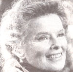

In celebration of folks involved in MOTHER-type doings around the world.
PATTY BLANKENSHIP: AT HOME IN SCHOOL
In September of 1979, Patty Blankenship was teaching her two children-10-year-old Patrick and 14-year-old Mark-at home . . . when DeKalb County, Georgia authorities arrested her and charged her with failure to comply with the state's compulsory school attendance law.
Patty (who faced a possible $100 fine and five days in jail for each day her sons had heen "kept out of school") was soon released on $1,000 bond and warned that the county would take custody of Mark and Patrick unless she enrolled the boys immediately. That threat forced the Blank: family to go into hiding until their
October 1979 trial . . . which ended in vicory when Magistrate Hopkins Kidd threw the case out of court, citing the Fifth Amendment and ruling that Mark and Patrick-the prosecution's only witnesse-sould not be compelled to give testimony that might incriminate them. New legal proceedings were promptly started, howwer, and Patty and her lawyer had to pool their efforts to obtain a restraining order to keep county officials from taking custody of her sons.
When she was put on trial again in March 1980, Ms. Blankenship testified that she was in complete compliance with Georgia's compulsory school attendance law-which nandates that all children between the ages of 7 and 16 attend either a public or a private school-since the piece of legislation doesn't define what constitutes a private school. After four days the case ended in a mistrial when the jury failed to reach a verdict . . . leaving the county with the option of dropping the charges or calling for a retrial at a later date. But although officials declined to say whether or not they would pursue litigation, there was some speculation that-because the state was beginning appear vindictive rather than consciencous-authorities had opted not to take furher legal action.
Still, Patty would like to see the repeal Georgia's compulsory school attendance law which she considers to be in violation of First Amendment rights. "It's a question of who should make the final decision about child's educational needs . . . the parents or the state," she says. "I contend that I have the full right and responsibility to choose what's best for my boys, and I believe that it's best to teach them at home." For an update on Patty's activities in home education, write Patty Blankenship, Dept. TMEN, P.O. Box 205, Roswell, Georgia 30075. And, for more details on this approach to learning, see issue 64's Plowboy Interview with movement leader John Holt turn to page 48 for information on or !ring back issues.)-JV.
KATHARINE HEPBURN: SPEAKING OUT FOR PLANNED PARENTHOOD
"Normally, I don't get involved in public controversy," begins Katharine Hepburn's open letter to the American people. "But reproductive freedom is a basic, personal issue ... ." Ms. Hepburn, whose mother helped Margaret Sanger found the organization which is today the Planned Parenthood Federation of America, recently joined forces with the nonprofit health service to help promote its Public Impact Program. The purpose of the undertaking is to inform individuals of, and encourage them to stand up against, two proposals which are-at this writing-pending in Congress and which, Katharine maintains, threaten to deprive women of the right to decide whether and when to bear children.
The first piece of legislation, the Human Life Amendment, would impose a ban on all abortions . . . and on some forms of birth control-such as the IUD-which technically abort pregnancies within a few days after fertilization. And the second, the Human Life Federalism Amendment, would give both Congress and the states the power to outlaw all abortions. Passage of either amendment, explains Katharine, could prohibit abortions even in cases of fetal malformation or where pregnancies have occurred as a result of rape or incest. In these and other situations, opines the spokeswoman for Planned Parenthood, abortions should be treated in the same way as any other medical procedure . . . as a matter between patient and physician.
Contributions-which can be sent to Planned Parenthood, Dept. TMEN, 810 Seventh Avenue, Box 5687, New York, New York 10249-will help support both the organization's national media campaign and its affiliates and clinics, which provide counseling and medical services to millions of low-income families each year. (For more information about the agency's work, see the Plowboy Interview in issue 17.)-JV.
IN BRIEF...
Novata, California dairy farmer RALPH GROSSI is converting the manure furnished by his 300 cows into enough energy to pay his electric bill and provide a profit besides. Grossi pumps the slurry into a pit lined with a plastic bag that expands to hold methane gas as it's produced by the decomposing dung. Water heated to 160°F is piped under the manure to keep it at the constant 95-100°F temperature necessary to trigger fermentation. Bacteria then break down the organic matter ... a process which yields the fuel that powers Ralph's generator, enabling it to feed approximately 40 kilowatts of electricity per hour directly into the Pacific Gas & Electric Company's system.
FLORENCE GLEASON-a scientist at the University of Minnesota Gray Freshwater Biological Institute-is directing a research team in the study of a "defensive" chemical produced by the blue-green algae Scytonema hofmanni (the substance was discovered several years ago by Gleason's then-colleague Charles Mason). The chemical, which can kill various other types of (green and blue-green) algae, may prove effective in controlling the overabundance of plant life that can rob lake water of the dissolved oxygen vital to aquatic organisms.
A horde of celebrities made headlines last summer as a result of their participation in a series of June antinuclear demonstrations, which were timed to coincide with the U.N.'s five-week-long special session on disarmament:
As the first week came to a close, a "Peace Sunday" concert-which boasted GRAHAM NASH (of Crosby, Stills & Nash) as one of its principal organizers-was in progress at Pasadena, California's Rose Bowl. And actress MERYL STREEP hosted the June 7th New York premiere of Mary Benjamin's film Eight Minutes to Midnight (the 1981 Academy Award nominee documentary about antinuclear activist Dr. Helen Caldicott . . . for details on Dr. Caldicott's accomplishments, see issue 56, page 110 and issue 58, page 114), as a benefit for a group called PAND (Performing Artists for Nuclear Disarmament) and for the city's mid-June nuclear disarmament rally. Actress JILL CLAYBURGH, director ANDRE GREGORY, and playwright ARTHUR MILLER also addressed guests at the showing.
Among the many speakers at New York City's June rally were CORETTA KING . . . ORSON WELLS. . . and THE REVEREND WILLIAM SLOANE COFFIN, JR. And performers JACKSON BROWNE . . . LINDA RONSTADT . . . BRUCE SPRINGSTEEN ... PETER, PAUL AND MARY . . . JOAN BAEZ. . . and PETE SEEGER (see the Plowboy Interview on page 16) contributed their musical talents to that event, as well.
Meanwhile, DR. BENJAMIN SPOCK took to the platform in the nation's capital to do his part in urging antinuclear activists to spread the word and keep the faith.-JV .
|
 |
|
|